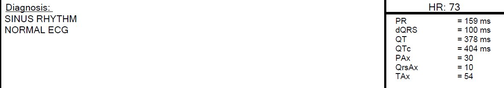
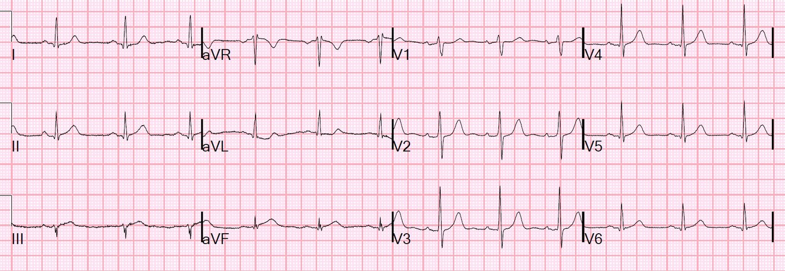
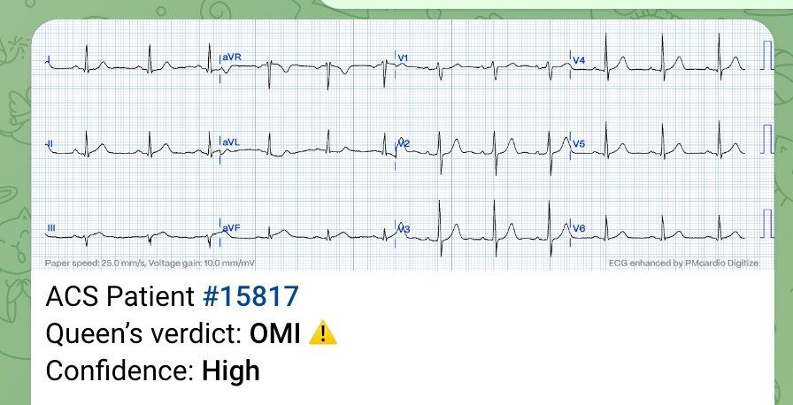
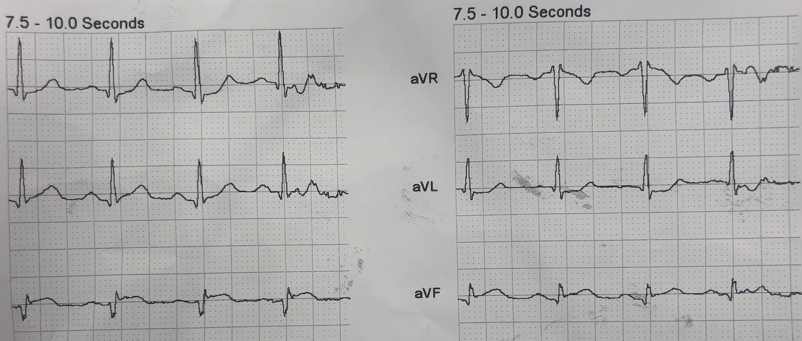
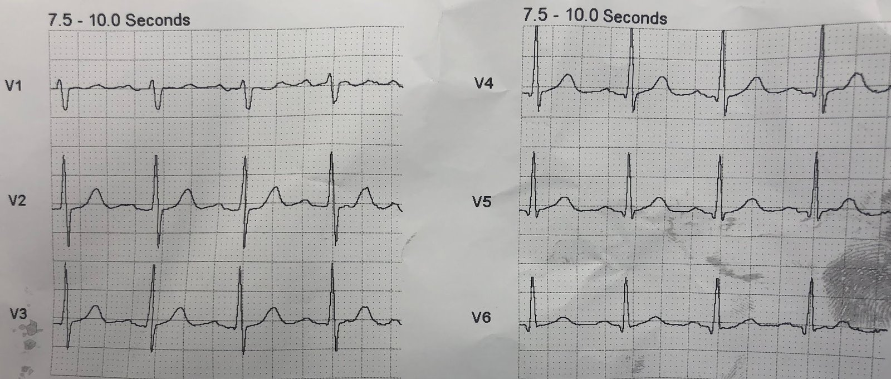
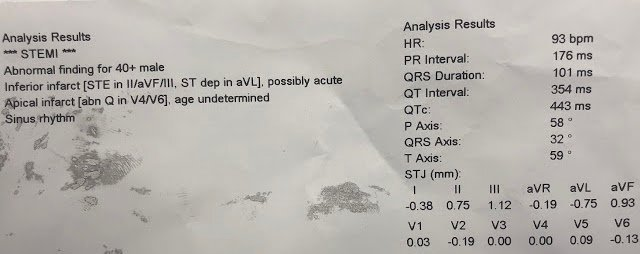
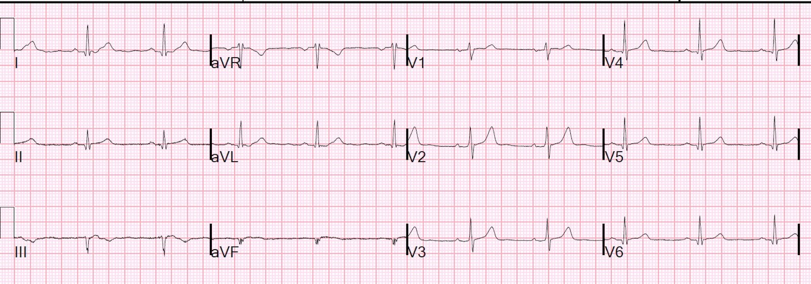
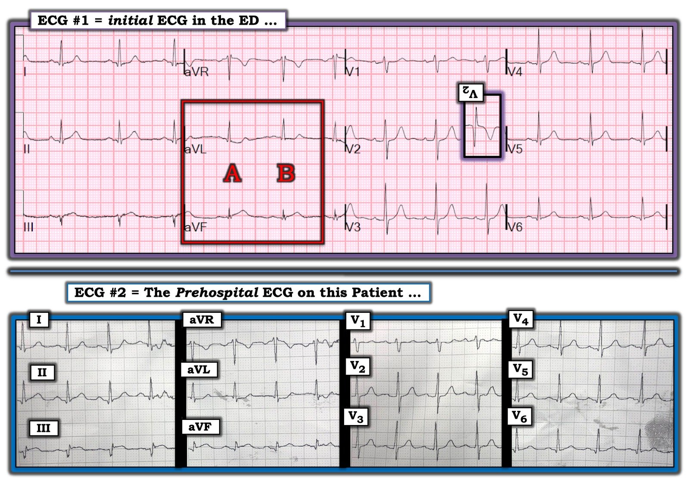

08/03/2019 — Đau ngực đã hết, và một điện tâm đồ “Bình thường” tại khoa cấp cứu
Bản dịch tiếng Việt của bài "Chest pain resolved, and a “Normal” ED ECG" – Dr. Smith’s ECG Blog. Giữ nguyên toàn bộ 10 hình ảnh của bản gốc.
Một người đàn ông trung niên, trước đó khỏe mạnh, đến viện ngay sau khi đau ngực khởi phát cấp tính, rất ít lâu trước khi gọi 911.
Khi đến nơi, bệnh nhân đã hết đau:




Đây là kết quả của thuật toán Veritas
Có một nhồi máu cơ tim thành dưới rất kín đáo. Một số người có thể bắt bẻ rằng điện tâm đồ này chưa chẩn đoán được nhồi máu cơ tim (dù tôi sẽ nói rằng nó “gần như chẩn đoán được.”)
Lưu ý máy tính đọc là bình thường — nhưng rõ ràng nó không bình thường.
Ít nhất máy tính cũng nên đọc điện tâm đồ này là “Bất thường ST-T không đặc hiệu.”
Jerry Jones bình luận:
“Bất kỳ ST chênh xuống nào trên điện tâm đồ của bệnh nhân đau ngực có khả năng là hội chứng vành cấp (ACS) đều là thay đổi soi gương (reciprocal) cho đến khi chứng minh được điều ngược lại.”
Và thêm nữa:
“Đã nhiều năm nay, tôi phản đối thuật ngữ “thay đổi ST-T không đặc hiệu.”” Thuật ngữ đó mang tính dứt khoát, gợi ý rằng “không hệ trọng, không quan trọng, đừng bận tâm hay cứ bỏ qua đi.” Tôi thích dùng thuật ngữ “thay đổi ST-T chưa giải thích được” hơn –Những bình luận tuyệt vời, cảm ơn Jerry!
Tôi thích nói rằng:
“Không phải điện tâm đồ không đặc hiệu; mà là người đọc không đặc hiệu.” Nhiều dấu hiệu “không đặc hiệu” chỉ không đặc hiệu vì bác sĩ không nhận ra ý nghĩa của chúng.
Nhiều năm sau, tôi gửi điện tâm đồ này cho Queen of Hearts:


Ứng dụng Queen of Hearts PM Cardio hiện đã có ở Liên minh châu Âu (được CE chấp thuận) trên App Store và Google Play.
Với người Mỹ, bạn cần chờ FDA. Nhưng trong lúc chờ đợi:
BẠN CÓ CƠ HỘI ĐƯỢC TRUY CẬP SỚM VÀO BOT AI PM Cardio!! (ỨNG DỤNG AI PM CARDIO OMI)
Nếu bạn muốn bot này giúp bạn chẩn đoán sớm OMI và cứu bệnh nhân cùng cơ tim của họ, bạn có thể đăng ký nhận bản beta sớm của bot tại đây. Bot chưa được phát hành, nhưng đây là cách để bạn có tên trong danh sách.
https://share-eu1.hsforms.com/18cAH0ZK0RoiVG3RjC5dYdwfyfsg (biểu mẫu đăng ký nhận bản beta sớm)
Ca bệnh tiếp diễn:
Trong ca này, chẩn đoán dễ hơn nhiều vì có điện tâm đồ trước viện:


Điều này chẩn đoán OMI thành dưới


Kết quả đọc bằng máy tính


Nó đã đo tất cả các đoạn ST và ghi lại (xem góc dưới bên phải)
Nó chỉ đo được một chuyển đạo (III) lớn hơn 1 mm, nên không có “2 chuyển đạo có ít nhất 1 mm”. Vậy mà nó vẫn đưa ra chẩn đoán STEMI.
Tôi chưa từng thấy điều này trước đây, và có lẽ họ đang thay đổi thuật toán của mình?
Phòng thông tim được kích hoạt từ trước viện (như mọi khi) và bệnh nhân được đưa vào phòng thông tim với thời gian từ cửa đến khi mở thông mạch khoảng 20 phút (rất nhanh).
Động mạch mũ trái (LCx):
Động mạch mũ là mạch khẩu kính lớn, đồng ưu thế, có mảng xơ vữa lan tỏa nhẹ
Có một nhánh bờ tù thứ nhất (OM-1) duy nhất, khẩu kính lớn, cấp máu cho thành bên và thành dưới-bên qua một nhánh bên đáng kể; nhánh này bị tắc ở đoạn gần, gợi ý nứt vỡ mảng xơ vữa. Cx đoạn xa/đoạn rãnh nhĩ thất cấp máu cho một chuỗi các nhánh sau bên trái (LPL) khẩu kính nhỏ.
Nhánh này bị tắc 100% ở phân đoạn gần, với dòng chảy TIMI 0 trước thủ thuật và dòng chảy TIMI III sau thủ thuật.
Đây là điện tâm đồ sau PCI:


cTnI đỉnh = 9.9 ng/mL
Siêu âm tim ngày hôm sau:
Rối loạn vận động thành khu trú - thành dưới.
Rối loạn vận động thành khu trú - thành dưới-bên.
Rối loạn vận động thành khu trú - thành bên.
Phân suất tống máu thất trái ước tính bình thường, ở giới hạn dưới của bình thường.
Kết luận của tôi: một vùng cơ tim rộng lớn
Mặc dù các dấu hiệu trên điện tâm đồ rất kín đáo, vẫn có một vùng cơ tim nguy cơ rộng lớn. Tái tưới máu nhanh đã giúp troponin đỉnh tương đối thấp.
Những điểm cần học
1. Về thực chất, đây là một STEMI thoáng qua
2. Mặc dù thoáng qua, và cơn đau đã hết, động mạch vẫn bị tắc.
3. Không thể tin vào kết quả đọc bằng máy tính. (Chúng có thể hữu ích.)
4. Những dấu hiệu kín đáo trên điện tâm đồ có thể đi kèm một vùng cơ tim nguy cơ rộng lớn
Đây là một ca nữa trong đó cơn đau ngực đã hết nhưng động mạch vẫn bị tắc, giống như bài đăng 2 ngày trước:
Bạn sẽ làm gì với bệnh nhân được chuyển đến bạn này, người hiện đã hết triệu chứng?
Xem những điểm cần học trong ca đó

===================================
Bình luận của KEN GRAUER, MD (8/3/2019):
===================================
Một ca giảng dạy tuyệt vời do Dr. Smith trình bày về người đàn ông trung niên này, được chuyển đến khoa cấp cứu (ED) sau cơn đau ngực mới khởi phát. Tôi tập trung bình luận vào một số điểm bổ sung liên quan đến việc đọc điện tâm đồ.
- Cho rõ ràng — tôi trình bày trong Hình 1 điện tâm đồ đầu tiên ghi được tại khoa cấp cứu ( = điện tâm đồ #1) — cùng với điện tâm đồ trước viện mà tôi đã ghép lại ( = điện tâm đồ #2).
- Vì mục đích giảng dạy — tôi nghĩ sẽ hữu ích nếu ban đầu đọc điện tâm đồ #1 như thể đó là điện tâm đồ duy nhất có được trong ca này, đồng thời ghi nhớ rằng cơn đau ngực của bệnh nhân đã hết vào thời điểm ghi điện tâm đồ #1.


====================
BÌNH LUẬN: Như Dr. Smith đã nói — ở bệnh nhân đau ngực mới khởi phát, điện tâm đồ #1 nên được đọc là nhồi máu cơ tim thành dưới cấp cho đến khi chứng minh được điều ngược lại.
- Nhịp trong điện tâm đồ #1 là loạn nhịp xoang. Các khoảng PR, QRS và QT bình thường. Trục mặt phẳng trán khoảng +30 độ. Không có lớn buồng tim. Có các sóng q nhỏ ở nhiều chuyển đạo — bao gồm 2 trong 3 chuyển đạo thành dưới (tức là chuyển đạo II và aVF). Chẩn đoán nhồi máu cơ tim thành dưới cấp được gợi ý bởi ST chênh lên kín đáo-nhưng-có-thật ở các chuyển đạo III và aVF, kèm thay đổi soi gương ở chuyển đạo aVL, ở bệnh nhân này, người mới than phiền đau ngực mới khởi phát ít lâu trước đó.
CÂU HỎI: Nếu bạn tập trung chú ý vào các chuyển đạo ghi đồng thời aVR, aVL và aVF — bạn sẽ thấy 2 phức bộ QRST hoàn chỉnh. Chẳng phải các phức bộ ST-T ở chuyển đạo aVL và aVF của 2 nhát này trông khá khác nhau sao?
- Phức bộ nào (A hay B) ở 2 chuyển đạo này là phức bộ “đúng”?
- Vì sao câu hỏi này quan trọng?
- Cách đọc điện tâm đồ #1 của bạn có thay đổi không nếu cả hai phức bộ ở chuyển đạo aVL và aVF trông giống A, thay vì giống B?
====================
TRẢ LỜI: Đáng tiếc là nhiễu đã xen vào bản ghi của các phức bộ A và B ở chuyển đạo aVL và aVF.
- NẾU phức bộ “đúng” là A — thì tôi sẽ hoàn toàn KHÔNG nghi ngờ gì về việc đã xảy ra nhồi máu cơ tim thành dưới cấp ở bệnh nhân này. Đó là vì đoạn khởi đầu ST thẳng đuỗn và ST chênh lên ở chuyển đạo aVF của phức bộ A rõ ràng hơn nhiều so với phức bộ B. Ngoài ra — ST chênh xuống dạng lõm (scooped) của phức bộ A ở chuyển đạo aVL trông như hình soi gương đối nghịch chính xác của ST chênh lên kín đáo thấy ở chuyển đạo III. Một trong những manh mối tốt nhất của nhồi máu cơ tim thành dưới cấp chính là dấu hiệu hình soi gương gần như kỳ diệu giữa ST chênh lên ở chuyển đạo III với ST chênh xuống soi gương ở chuyển đạo aVL.
- Mặt khác — tôi sẽ kém chắc chắn hơn về nhồi máu cơ tim thành dưới cấp nếu phức bộ “đúng” ở chuyển đạo aVL và aVF là phức bộ B. Xét đến biên độ QRS ở chuyển đạo aVF giảm đến mức nào — tôi vẫn sẽ đọc sóng T ở chuyển đạo aVF là cao-hơn-dự-kiến, và có lẽ là tối cấp — nhưng, ở chuyển đạo aVF phức bộ B rõ ràng kém thuyết phục hơn phức bộ A. Tương tự — đoạn ST ở chuyển đạo aVL của phức bộ B DẸT một cách bất thường, chắc chắn là bất thường. Tuy nhiên, phức bộ B ở aVL không cho thấy hình phản chiếu soi gương của những gì ta thấy ở đoạn ST chuyển đạo III.
- GIẢI PHÁP: Đặc biệt khi các thay đổi điện tâm đồ kín đáo (như ở điện tâm đồ #1) — Hãy có ngưỡng thấp để ghi lại ngay điện tâm đồ khi các chuyển đạo then chốt (tức là như chuyển đạo aVL và aVF ở điện tâm đồ #1) không đạt yêu cầu về kỹ thuật. Chúng ta cần biết phức bộ A hay phức bộ B mới là phức bộ “đúng”!
====================
Bất kể phức bộ A hay B là phức bộ “đúng” — vẫn có những dấu hiệu điện tâm đồ khác trên điện tâm đồ #1 gợi ý mạnh nhồi máu cơ tim thành dưới cấp. Đó là những dấu hiệu nào?
- GỢI Ý: Bạn thấy (những) dấu hiệu bất thường nào ở các chuyển đạo ngực phía trước?
====================
TRẢ LỜI: Tôi đã cố ý bỏ qua việc đánh giá tăng tiến sóng R trong lần đọc ban đầu điện tâm đồ #1 ở trên. Thông số này thường bị quên khi không dùng cách tiếp cận hệ thống để đọc điện tâm đồ … — nhưng đánh giá tăng tiến sóng R thật sự quan trọng trong ca này.
- Chiều cao sóng R ở chuyển đạo V2 của điện tâm đồ #1 = độ sâu sóng S ở chuyển đạo này. Do đó, vùng chuyển tiếp xảy ra sớm (tức là giữa V1 và V2). Ngoài ra — sóng R ở chuyển đạo V3 trông cao bất thường.
- Các đoạn ST ở chuyển đạo V2 và V3 của điện tâm đồ #1 thẳng-hơn-mức-đáng-lẽ-phải-có, nếu không muốn nói là hơi chênh xuống (Bình thường ở các chuyển đạo này thường có ST chênh lên nhẹ dạng lõm (concave-up)).
- Các chuyển đạo phía trước V1, V2 và V3 cho hình soi gương của hoạt động điện ở thành sau thất trái. Lưu ý nghiệm pháp “soi gương” dương tính được minh họa trong ô chèn ở chuyển đạo V2. Điều này gợi ý tổn thương thành sau.
- ĐIỀU CỐT LÕI về điện tâm đồ #1: Ngay cả khi phức bộ B ở chuyển đạo aVL và aVF mới là phức bộ đúng — ở một bệnh nhân đau ngực mới khởi phát — nhưng đã hết đau vào thời điểm ghi điện tâm đồ #1 — sự kết hợp của các dấu hiệu bất thường còn tồn lưu ở các chuyển đạo III, aVL, aVF + các chuyển đạo V2 và V3 gợi ý mạnh rằng đã xảy ra nhồi máu cơ tim cấp (nhiều khả năng là nhồi máu cơ tim dưới-sau ).
====================
Như Dr. Smith đã nói — chẩn đoán nhồi máu cơ tim cấp trong ca này dễ hơn nhiều — vì đã tìm được một điện tâm đồ trước viện ( = điện tâm đồ #2). Tôi xin bổ sung vài suy nghĩ về việc đọc điện tâm đồ trước viện này:
- Mặc dù một lần nữa lại thấy các sóng q nhỏ ở nhiều chuyển đạo của điện tâm đồ #2 — có một sóng Q lớn và rộng ở chuyển đạo III mà không thấy ở chuyển đạo III của điện tâm đồ #1. Điều lạ — là hình thái QRS ở 5 chuyển đạo chi còn lại không khác biệt đáng kể giữa điện tâm đồ #1 và #2. Do đó chúng ta không thể giải thích sự biến mất của sóng Q lớn này ở chuyển đạo III (so với bản ghi trước viện) bằng sự thay đổi trục. Thay đổi tư thế bệnh nhân có thể là một yếu tố (tức là bệnh nhân bệnh cấp tính có thể khó nằm hoàn toàn phẳng khi ghi điện tâm đồ) — nhưng trừ khi có ghi chú cụ thể về việc thay đổi tư thế bệnh nhân, sẽ không thể kiểm chứng được điều này.
- Dù sao đi nữa — đoạn ST ở chuyển đạo III của điện tâm đồ #2 có dạng vòm (coving) và chênh lên rõ hơn — lần này kèm ST chênh xuống soi gương mang hình soi gương không thể chối cãi ở chuyển đạo aVL. Cùng với sóng Q thành dưới, và ST chênh lên rõ rệt cũng có ở chuyển đạo aVF — điện tâm đồ #2 chẩn đoán nhồi máu cơ tim thành dưới cấp.
- Dù kín đáo — một lần nữa hãy lưu ý gợi ý ST dẹt (nếu không muốn nói là hơi chênh xuống) ở các chuyển đạo V2 và V3 của điện tâm đồ #2 — một lần nữa đi kèm vùng chuyển tiếp sớm bất thường.
====================
ĐỂ TÌM HIỂU THÊM:
- Để biết thêm về mối tương quan “hình soi gương” kỳ diệu giữa chuyển đạo III và aVL trong nhồi máu cơ tim cấp — BẤM VÀO ĐÂY (Xin xem Bình luận của tôi ở cuối trang.)
- Về “Quan điểm của tôi” đối với việc dùng nghiệm pháp soi gương (Mirror Test) để chẩn đoán nhồi máu cơ tim thành sau cấp — BẤM VÀO ĐÂY (Xin xem Bình luận của tôi ở cuối trang.)
- Về “Quan điểm của tôi” đối với việc dùng Cách tiếp cận hệ thống để đọc điện tâm đồ — BẤM VÀO ĐÂY.